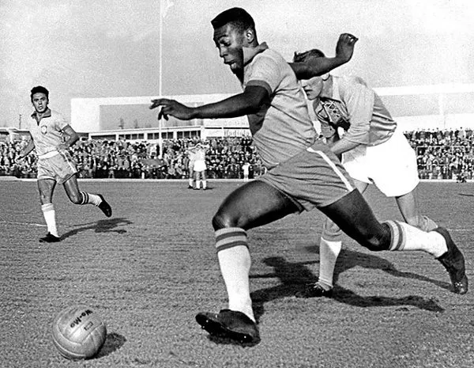

• A história do futebol remonta a jogos de bola ancestrais, como o Cuju na China e o calcio na Itália, mas a modalidade como a conhecemos hoje nasceu na Inglaterra do século XIX. A fundação da Football Association (FA) em 1863 e a criação das suas regras padronizaram o jogo, separando-o do rugby. O esporte chegou ao Brasil em 1894 com Charles Miller, e a partir de então se tornou o esporte mais popular do mundo, com o Brasil sendo o maior vencedor da Copa do Mundo.
• O futebol se desenvolveu na Inglaterra em 1863 com o objetivo de unir os jogos de futebol das escolas públicas e universidades inglesas, a partir da criação das regras do jogo.
Há informações de jogos realizados nessas escolas em meados de 1551. A Inglaterra ostenta a posição de primeiro país a documentar a palavra “futebol” e ter as primeiras referências do esporte em francês (1314).
O país naturalmente é a origem dos clubes de futebol mais antigos (datados de meados de 1857), das competições mais antigas (Copa FA - Associação de Futebol - fundada em 1871) e a primeira nação a ter uma liga de futebol (1888). Por essas razões, a Inglaterra é considerada a pioneira do futebol como nós o entendenos na atualidade.
• O futebol brasileiro é uma paixão nacional, com uma rica história e uma seleção de futebol feminina que conquistou o título da Copa América. O futebol brasileiro é conhecido por suas conquistas internacionais e pela grande quantidade de praticantes e clubes. O país é o maior exportador de futebolistas do mundo, com mais de 1.200 brasileiros jogando fora de seu país de origem. O futebol brasileiro é celebrado em várias competições, incluindo o Brasileirão e a Copa do Brasil, e é um esporte que movimenta a economia e a cultura do país.

Primeiros Torneios e Competições
Desde suas origens, o futebol evoluiu rapidamente e logo começou a ganhar destaque internacional por meio de competições oficiais que reuniam times e seleções de diferentes países. O maior marco nessa trajetória foi a realização da primeira Copa do Mundo da FIFA, que aconteceu em 1930 no Uruguai. Essa competição pioneira reuniu 13 seleções nacionais e marcou o início de um torneio que viria a se tornar o evento esportivo mais assistido e celebrado do planeta.
Com o sucesso da Copa do Mundo, o futebol passou a se organizar melhor em nível regional e nacional, dando origem a diversas ligas e campeonatos locais ao redor do mundo. Na América do Sul, a criação da Copa Libertadores da América na década de 1960 consolidou a rivalidade entre os principais clubes do continente, tornando-se uma das competições mais emocionantes e disputadas do futebol mundial.
Na Europa, a partir da década de 1950, surgiu a Liga dos Campeões da UEFA, conhecida mundialmente como Champions League, que reúne os clubes mais fortes de diversos países para disputar o título continental. Essa competição é famosa por seus jogos emocionantes, confrontos entre gigantes do futebol e momentos históricos que ficam na memória dos torcedores.
Esses torneios internacionais e continentais não apenas elevaram o nível técnico do futebol, mas também ajudaram a espalhar a paixão pelo esporte em todas as partes do mundo, criando uma cultura futebolística rica, cheia de tradição e emoção. Até hoje, eles são os grandes palcos onde clubes e seleções buscam a glória e onde os fãs vivem as maiores emoções do esporte.
Beneficios do esporte
Jogar futebol é considerado um exercício completo, porque os movimentos intensos e variados através de corridas, chutes e giros, ajudam a manter o corpo sempre saudável, sendo uma ótima opção também para mulheres, porque ajuda na prevenção da osteoporose e sintomas da TPM.
Este esporte é uma excelente forma de perder peso e manter a boa forma, também combate o estresse e ansiedade, além de melhorar o convívio social, evitando casos de obesidade infantil e depressão. Para alcançar todos os benefícios, é recomendado praticar o futebol por, pelo menos, 30 minutos, duas a três vezes por semana.
Exemplos:
•Aumento da capacidade aeróbica e melhora da saúde cardiovascular.
•Redução da gordura corporal e aumento do tônus muscular.
•Fortalecimento do coração e promoção do bem-estar mental e social.
•Combate ao estresse e à ansiedade, além de melhorar o convívio social.
•Estimula a coordenação e promove o trabalho em equipe.
•Esses benefícios fazem do futebol uma atividade física completa e benéfica para a saúde.